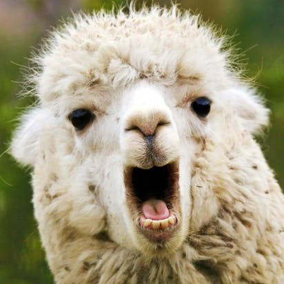
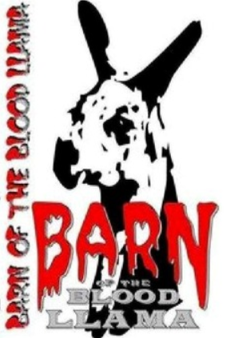

Larry De-Llama.
NYC <-> LDN // Model life ain't easy
My Favourite Movies

|
The Emperor's New Groove
My take: Honestly a classic. Sequels are total fire too IMBD says: Emperor Kuzco is turned into a llama by his ex-administrator Yzma, and must now regain his throne with the help of Pacha, the gentle llama herder. |
|  |
Barn of the Blood Llama
My take: A bit edgy but the Llama sex scene really gets me IMBD says: Inbred hillbillies trap various passersby at their World o Wool llama farm where an animal coroner is conducting genetic experiments which turn the animals into sex-starved toxic beasts. A new look at bad animal husbandry |

|
Dr. Dolittle 2
My take: Good one for the baby Llamas but not much substance IMBD says: Inbred hillbillies trap various passersby at their World o Wool llama farm where an animal coroner is conducting genetic experiments which turn the animals into sex-starved toxic beasts. A new look at bad animal husbandry |